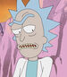
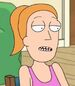

Descripcion
Rick Sánchez es un ejemplo de típico "científico loco". Es un genio, pero es irresponsable, alcohólico, egoísta, un poco depresivo y claramente con poca cordura. Rick por diferentes razones termina mudándose a la casa de su hija Beth y en ese momento se encuentra con su nieto Morty; un joven de 14 años tímido y no muy listo. Al juntarse con su nieto, Rick y Morty vivirán una variedad de aventuras a lo largo del Cosmos y Universos paralelos. Y es mediante tantas vivencias y reflexiones que Rick busca que su nieto Morty no acabe como su padre, Jerry, un hombre muy poco exitoso que a pesar de tener buenas intenciones resulta ser bastante inútil en muchas ocasiones y depende mucho de su esposa, Beth, madre de Morty.
A pesar de ser muy apegados, Rick y su nieto, experimentarán momentos en los que Summer, hermana de Morty, se unirá en ocasiones a las pintorescas aventuras provocadas por Rick.
- Pilot
- Lawnmower Dog
- Anatomy Park
- M. Night Shaynm-aliens!
- Meeseks and Destroy
- Rick Potion #9
- Raising Gazopazorp
- Rixty Minutes
- Something Ricked This Way Comes
- Close Rick.counters of the Rick Kind
- Ricksy Business
- A Rickle in Time
- Mortynight Run
- Auto Erotick Assimilation
- Total Rickall
- Get Schwifty
- The Ricks Must Be Crazy
- Big Troublein Little Sanchez
- Interdimensional Cable 2: Tempting Fate
- Look Who´s Purging Now
- The Wedding squanchers
- The Rickshank Rickdemption
- Rickmancing the Stone
- Pickle Rick
- Vindicators 3: The Return of Worldender
- The Whirly Dirly Conspiracy
- Rest and Ricklaxation
- The Ricklantis Mixup
- Morty´s Mind Blowers
- The ABC´s of Beth
- The Rickchurian Mortydate
- Bushworld Adventures
Actores de doblaje
| Imagen | Personaje | Actor | |
|  | Rick Sanchez | Justin Roiland | |
| Mortimer "Morty" Smith | |||
|  | Summer Smith | Spencer Grammer | |
| Beth Sanchez Smith | Sarah Chalke | ||
| Jerry Smith | Chris Parnell | ||